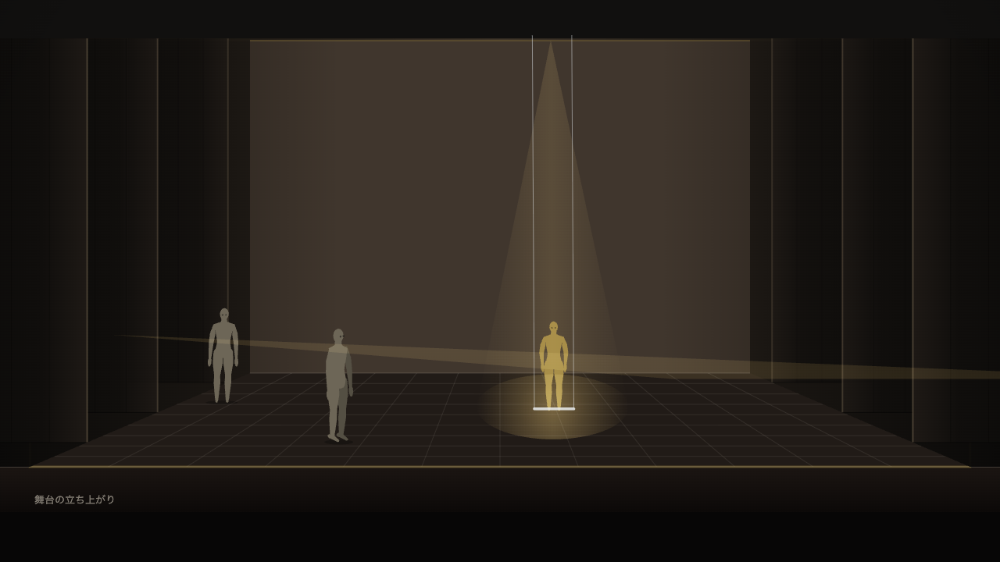
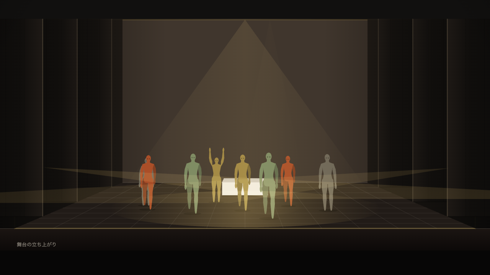
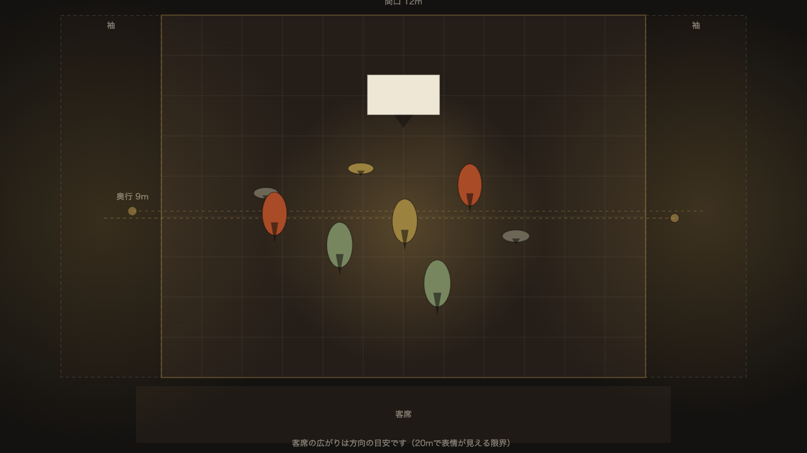
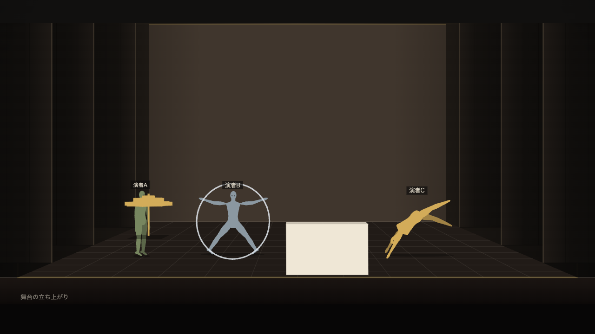
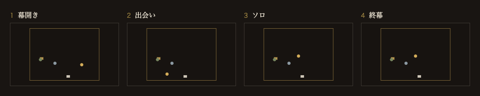

STAGE SKETCH — β
舞台スケッチ
クイックガイド — 90秒でわかる、最初の使い方
β版をお試しくださる方へ
2026-08
SCENE 01
これは何
正面と真上、二つの図が連動します。
同じ舞台を二つの視点で——片方を動かせば、もう片方も動きます。


SCENE 02
一覧
ON STAGE
描けるもの。
演者も小道具も、名前をつけて自由に並べられます。

- 配置演者・小道具・舞台セットを自由に置き、向きも変える
- 姿勢30種——側方宙返り、シルホイール、一輪車
- 照明吊り・SS・前明かり・転がしの4種
- 機構盆・せり・幕・水面PCのみ
SCENE 03
場面の管理
SCENES
場面を並べて、ショーにする。
一場面ずつ作り、名前をつけ、順番を入れ替える。並んだ場面がそのままショーの流れです。

作るADD白紙から足すほか、動線の先へ動いた状態を次の場面にもできる。
束ねるSECTION幕・章のまとまりを作って、長いショーも見通せる。
つなぐCUE転換の長さと暗転を場面ごとに決められる。
SCENE 04
一緒に見る
SHARED SESSION
同じ画面を、一緒に見られます。
招待URLで入ると、ホストと同じ場面が手元に映ります。レーザーポインタと矢印で「ここ」を指せます。
打ち合わせはZoom越しにどうぞ。場面はホストが送り、あなたは指す係です。
リアルタイム共有（会議用）
セッションを開始 コピーSCENE 05
保存のこと
BACKUP
保存は端末の内部のみ。
クラウドには送られません。だから——区切りのいいところで〈書き出す〉を押して、控えを一枚。お願いはこれだけです。
ブラウザのデータ削除で消えます。控えのファイルがあれば、いつでも戻せます。
SCENE 06
困ったとき
SUPPORT
困ったときは、この三つ。
使い方をさがす〈設定〉から。言葉を入れると、その場で答えが出ます。
使いかたの冊子深く知りたくなったら。全10章の読み物です。
感想を送るひとことで十分。「ここで迷った」が一番の贈り物です。
それでは——開演です。